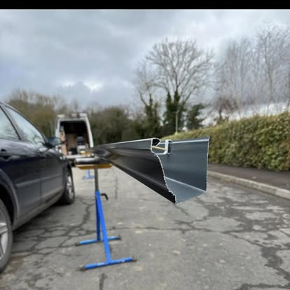

Gutterworx · West Yorkshire
Cut & Drop Seamless Guttering
A flexible seamless gutter supply service for roofers, joiners, builders and other trade customers — available in 5-inch and 6-inch Ogee profiles.
The service
What to expect.
Cut and drop lets your team handle the installation while we provide the specialist roll-forming equipment and accurately formed aluminium lengths. Tell us the profile, total length, outlets, corners, colour, site address and preferred date using the dedicated fields on our quote form.
Included in the conversation
- 5-inch Ogee (127mm) option
- 6-inch Ogee (152mm) option
- Continuous lengths formed for the job
- Suitable for roofers, joiners and builders
- Corners, outlets and colour captured at quotation
- Site or delivery details agreed in advance

Questions
Cut & Drop Seamless Guttering FAQs.
What measurements do you need?
Provide the required total length, individual run lengths if relevant, profile size, number and type of corners, outlets and site address. We will clarify anything else before confirming.
Do you install cut and drop orders?
The cut and drop option is intended for trade customers carrying out their own installation. If you want Gutterworx to install the system, choose Seamless Guttering on the quote form instead.
Can I choose 5-inch or 6-inch Ogee?
Yes. Both profiles are included as options in the trade quote form.